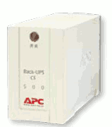

硬件基础教程
作者：TeliuTe 来源：基础教程网
UPS 也叫不间断电源，在突然停电时，可以再供电一阵，下面我们来看一个练习；
1、UPS
1）UPS 形状像一个长箱子，后面有一个三相插头接外面的市电，还有两个插孔，可以接电脑插头或打印机插头；

2）UPS 开关在正面或顶上的一个小圆按钮，一般按一下就可以开，有些是需要按住三秒开启，等工作稳定后，再开启电脑；
3）UPS工作时亮一个绿灯，工作正常，黄色灯亮表示在充电，红色灯亮，并伴有报警蜂鸣声，表示停电了正在用蓄电池供电；
2、使用维护
1）UPS有额定功率，负载一般在80%左右，比如500W的UPS带400W以内的电脑；
2）有些 UPS 还带稳压功能，在平时可以让电流更稳定；
3）首次使用时应充电完全，接上以后充足14个小时左右，具体可以看说明书；
4）即使电源稳定，隔一段时间后(有些是半年)，也应人为断开市电，让UPS工作，
这时候把电脑重启，按DEL键到BIOS设置界面，然后等待UPS自动关机，然后再充足；
本节学习了UPS的基础知识，如果你成功地完成了练习，请继续学习下一课内容；
本教程由86团学校TeliuTe制作|著作权所有
基础教程网：http://teliute.org/
美丽的校园……
转载和引用本站内容，请保留作者和本站链接。